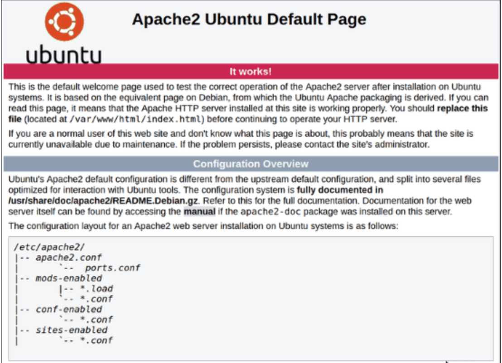

LAMP Stack
LAMP Stack is an open source software that installed together to server to host websites. LAMP stack is also represented by Linux operating systemwith Apache web server and stored in MySQL database using PHP. This week blog will show you how to install LAMP Stack on a Ubuntu. All you need is:
1. Ubuntu with sudo privileges
2. Terminal
Ubuntu LAMP Stack installation
Step 1: Update Package
Before installing LAMP stack you should update your OS package repository to ensure it installs the latest versions of the software. to do that run this command:
sudo apt-get update
Step 2: Install Apache
Run this command to install Apache
sudo apt-get install apache2
Press Y and hit Enter to continue installing.
After installation is done check the status of appache2 by runing this command:
sudo service apache2 status
To ensure Apache is running, enter the IP address of your server in the address bar and press ENTER.
If you get this page its mean you have installed apache.
Step 3: Install PHP
Now we will be installing PHP, to install PHP run this command:
sudo apt-get install php libapache2-mod-php php-mysql
Next, you should modify the way Apache serves files when directories are requested. By default, Apache first looks for a file card named index.html. However, we want it to look for the index.php file instead. To change this, open the dir.conf file in a text editor with root privileges:
sudo vim /etc/apache2/mods-enabled/dir.conf
Move index.php file to the first position. Save and close the file
Step 4: Restart Apache
For the changes to take effect, you must restart the Apache service by running this command:
sudo systemctl restart apache2
Step 5: Test PHP
Create a basic PHP script and save it to the “web root” directory. This is necessary for Apache to find and serve the file correctly. This directory is located at /var/www/html/. by running this command
sudo vim /var/ww/html/info.php
Enter this php code:
< ? php
phpinfo();
?>
Close and save the file and open a browser and type your IP address/info.ph
You will get a details display of LAMP stack
Step 3: Install MySQL
Run this command to isntall MySQL
sudo apt-get install mysql-server